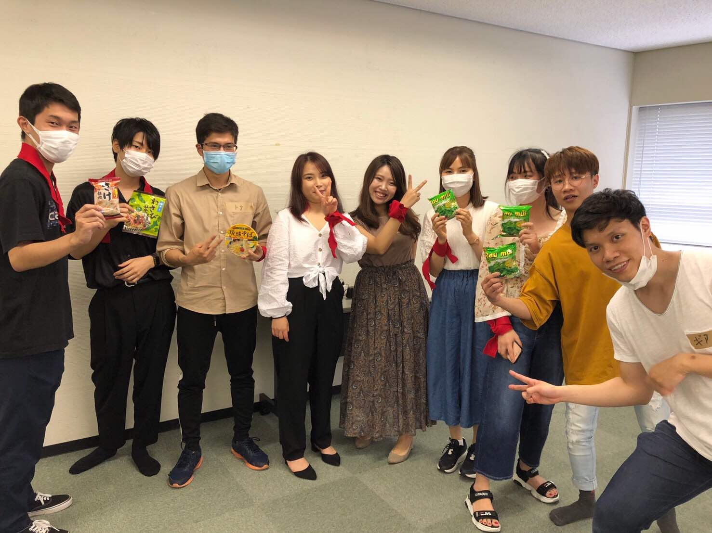

初めての交流会
Info ｜ 2020/06/16
こんにちは。
ベトナム交流会、メンバーの菅原です。
ベトナム交流会の参加は第6回目からで、3回参加しました。
8回目からはメンバーと言う形で、この今ご覧になっているページの作成などIT部分をやらせてもらってます。
今まで「交流会」というものに参加したことがなく、初めてのときに少し恥ずかしくなりちっちゃくなっていました。
交流会？怖くない？一人ぼっちになったりしない？人見知りだけど話せるかな？ベトナムって何語話すんだろう？
結論から言うとそんな心配は全く必要ありません！
この記事では初めて交流会に参加する方（したい方）向けに、普段の交流会がどのように行われるかを紐解いていきます
参加の申込
交流会の告知はFacebookとこのホームページでされます。
一人じゃ参加しにくいと思っているときは、友達をたくさん呼んで参加しにくさを和らげちゃいましょう！
(みんなで渡れば怖くない精神笑)
まずは、代表のFacebookをチェックしよう！
大山のFacebookページ無事参加が決まったときは、Facebookのイベントページ、もしくはこのホームページに貼り付けてある参加申込フォームから登録をお願いします。
交流会当日の流れ
会場はそのイベントによってまちまちです。お間違いの無いようにお越しくださいね。
受付
会場に到着したら受付を行います。交流会の企画メンバーが優しく出迎えてくれます。
もし参加費がある場合はこのタイミングでいただきます。
受付したあとには、テープに自分の名前を書いて、服に貼るので初対面でも安心！
この回は運動会だったため、一人１つはちまきをつけました。どんな企画があるかも行ってみるまでのお楽しみ！
アイスブレイク
アイスブレイクでは全員で一つのゲームなどをして打ち解け合います。はじめましての挨拶を交わす人もちらほら。
この回では「たけのこニョッキゲーム」をベトナム語でやりました。ベトナム語って難すぃ〜
たけのこニョッキゲームに夢中で誰も写真を撮っていませんでした笑
今回はチーム戦だったので、チームごとにも自己紹介や記念撮影をしました。
イベント
イベントの内容はその時によって色々あります。ベトナム人と日本人が協力しないとできないゲームをたくさん企画しています。
この記事では、第8回の様子を覗いてみましょう。
手押し相撲
手で押して行う相撲です。日本人にはおなじみなスポーツだけど、ベトナムにはあるの？？そんな会話が聞こえてきそうです。
二人三脚のスプーンリレー
ちょっと難しい競技を企画しました。二人三脚しながらスプーンの上にボールを乗せてリレーします。落とさないように注意です！
落としてしまったときは箸でボールをスプーンに戻します。これがなかなか難しい…
風船割り
風船を早く膨らませて、割ります。全員が早く割ったチームが勝ちのゲームです。
表彰式
そんなこんなで交流会も無事終わり、最後の表彰式です。
校長先生ばりの長話をする代表もいますがご愛嬌で😂
今回は優勝チームにパクチーラーメンなど景品が手渡されました。
記念撮影
最後にみんなで記念撮影をします。SNS掲載NGの方は遠慮なくおっしゃってくださいね。

交流
会場の時間の都合もありますが、交流の時間もあります。
お互いに気になったことや「今度ベトナムに行くんだよね」とか「日本の美味しいごはん屋さん教えて」とか色々聞きあっちゃいましょう！
なんとなく輪に入っているだけでも、誰かが話しかけてくれる優しい世界です。
ちなみに、、、
終わった後の打ち上げもありますが、また別の機会に記事にするので、楽しみにしててください！
まとめ
いかがだったでしょうか。交流会の雰囲気なんとなく掴んでいただけたでしょうか。
わからないことや不安なことがあったら交流会メンバーにどしどし聞いてください！
次の交流会に参加するのは君だ！！！！